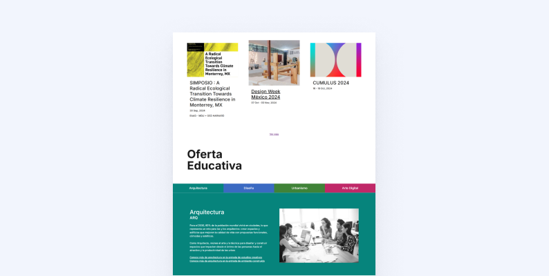
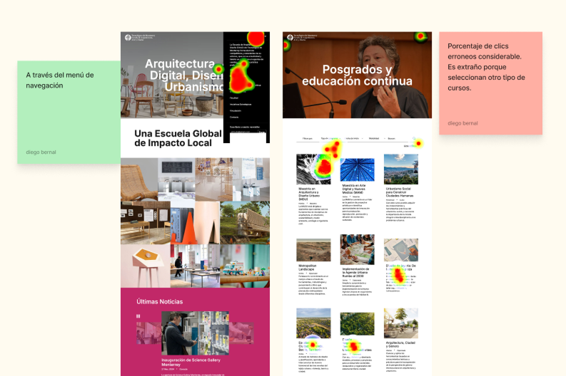
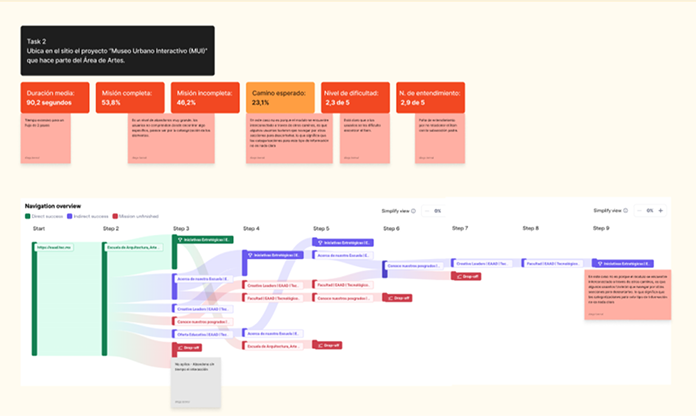
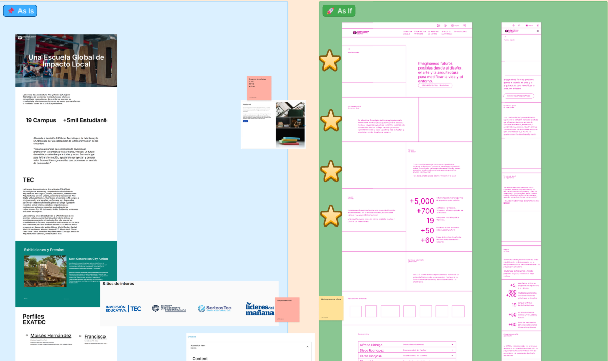
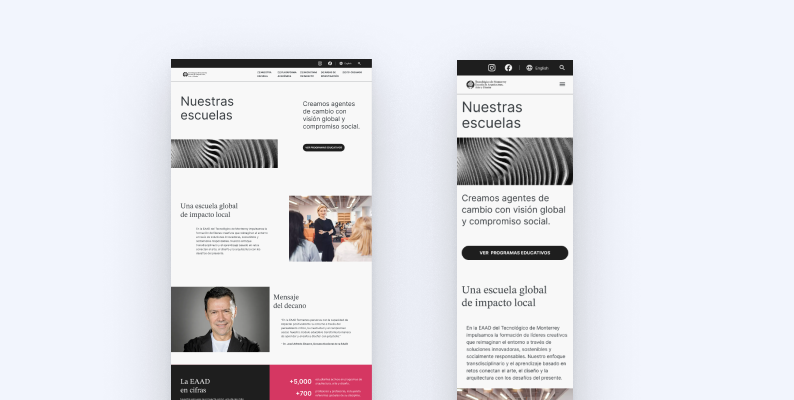

University Redesign
Transforming a university's digital experience: designing clarity, accessibility, and belonging across a complex academic ecosystem.

- Role
- UI/UX Designer
- Company · Year
- Playful · 2025
- Client
- Private university, School of Arts & Design · Drupal website
- Result
- ★ Faster search · Clearer user flows · New IA & sitemap
- What I worked on
- UX strategy · Information architecture · User flows & wireframes · Design system · UI per sprint · Accessibility
Overview
The Escuela de Artes y Diseño redesigned its website to better serve a diverse academic community: prospective students, faculty, alumni, press, and industry partners.
While the institution had a strong conceptual and artistic identity, its digital experience had become difficult to navigate, especially for users outside the internal ecosystem.
I led the UX effort to transform an initial homepage concept into a clear, inclusive, and scalable digital experience across the full site.
The initial visual direction was defined by the marketing team. My responsibility was translating that vision into a functional, accessible, and scalable UI system, aligning brand expression with real user needs, technical constraints, and long-term maintainability.

The challenge
- Fragmented and overwhelming navigation
- No clear entry points for different user groups
- Key academic information buried across sections
- Low accessibility and discoverability
As a result, users often felt disoriented and unsure where they belonged or how to complete even basic tasks.

My role
- UX strategy and product thinking
- Information architecture
- User flows and wireframes
- Design system definition
- UI design per sprint
- Accessibility considerations
I collaborated closely with creative, development, and academic stakeholders throughout the process.
Users & needs
- Prospective students: clear program information and admissions paths
- Faculty & staff: fast access to internal resources
- Press & media: news, events, official information
- Industry partners: research and collaboration opportunities
- Alumni: ongoing connection with the institution
These needs directly informed the site structure, navigation logic, and content hierarchy.
UX approach
Audit & research
I audited the existing website to evaluate content structure, navigation patterns, and accessibility gaps, complemented by qualitative feedback from users.
Information architecture
- Clear entry points by user type
- Reduced cognitive load
- Improved content discoverability
- Logical relationships between sections

Wireframes & user flows
The new structure was translated into wireframes and user flows to validate hierarchy and navigation before moving into UI design.

Design system
I defined a lightweight, scalable design system covering components, typography, spacing, interaction states, and accessibility, optimized for Drupal implementation.
UI design
UI templates were designed iteratively per sprint, maintaining brand alignment while significantly improving clarity, usability, and accessibility.

Micro impact & outcomes
- Faster search: users found key elements and academic information in less time
- Improved user flows for each audience, from prospective students to faculty
- A rebuilt information architecture and sitemap
- Clearer entry points reduced user disorientation during internal reviews and stakeholder walkthroughs
- Navigation structure enabled faster access to academic information for prospective students and external audiences
- Content ownership and hierarchy simplified future updates within Drupal
- Accessibility considerations improved readability and contrast across key academic pages
While quantitative analytics were limited, qualitative feedback from stakeholders and internal users confirmed improved clarity, orientation, and maintainability.
Live site audit
Google Lighthouse via PageSpeed Insights, mobile, measured on the live site in September 2026.
This project reinforced the importance of designing for diverse audiences within a single platform and aligning UX decisions with long-term maintainability.